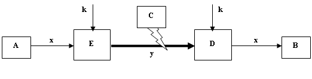

Асосий тушунчалар ва белгилашлар
Криптография нуқтаи-назаридан ҳар кандай кимгадир жўнатишга хозирланган хабар бошлангич маълумот ёки очиқ матн дейилади.
Очиқ матн ҳар доим маълум бир алфавит асосида тузилади.
Алфавит – ахборотларни кодлаштириш учун фойдаланиладиган чекли сондаги белгилар тўплами.
Масалан:
· ўттиз олтита белгидан (ҳарфдан) иборат узбек тили алфавити;
· ўттиз иккита белгидан (ҳарфдан) иборат рус тили алфавити;
· йигирма саккизта белгидан (ҳарфдан) иборат лотин алфавити;
· икки юзи эллик олтита белгидан иборат ASCII стандарт компьютер кодларининг алфавити;
· бинар алфавит, яъни 0 ва 1 белгилардан иборат бўлган алфавит;
· саккизлик ва ўн олтилик санок тизимлари белгиларидан иборат бўлган алфавитларни келтириш мумкин.
Берилган очиқ матнни маълум бир метод ёрдамида ўзгаритириб, унинг асл маъносини яшириш ва ўзгалар учун тушунарсиз кўринишга келтириш билан криптография (cryptos – махфий, grapish – ёзиш) фани шуғулланади. Ушбу жараёнга маълумотларни шифрлаш дейилади ва унинг натижасида хосил бўлган маълумот эса, шифрматн (шифрланган матн), криптограмма ёки ёпиқ матн деб юритилади.
Шифрлаш жараёнига тескари бўлган амал дешифрлаш бўлиб, унинг ёрдамида ёпиқ матн бошланғич, яъни очиқ матн холатига кайтарилади.
Шифрлаш ва дешифрлаш методининг ўзи эса шифр деб аталади. Яъни, шифр - бу берилган очиқ маълумотлар тўпламини маълум бир коидалар ва калит ёрдамида ёпиқ маълумотлар тўпламига келтирувчи ва аксинча, ёпиқ маълумотдан калит ёрдамида очиқ маълумотни хосил килувчи ўзгартиришлардир.
Калит - бу шифрнинг ўзгариб турувчи элементи бўлиб, аниқ бир маълумотни шифрлаш ёки дешифрлаш максадида ишлатилади. Калит сифатида алфавитдан олинган белгилар кетма-кетлиги, бирор сўз, рақам ва бошқалар ишлатилиши мумкин.
Калитни билмаган холда шифрматнни очиш ва унинг асл маъносини аниклаш криптотахлил йули билан амалга оширилади.
Криптогрфия ва криптотахлил криптология (kryptos – махфий, logos – илм) фанининг мақсадлари ўзаро қарама-қарши бўлган икки йуналишидир.
Маълумотларни шифрлашда ишлатилаётган алгоритм криптосхема ёки криптоалгоритм деб аталади.
Криптоалгоритмнинг ишлашини белгиловчи коида ва процедуралар тўпламига криптопротокол дейилади.
Криптосхема, криптопротокол калит ва уни бошқариш (тайёрлаш, таркатиш) ни уз ичига олувчи тизим криптотизим деб аталади.
Криптосхема, криптопротокол, криптотизим каби тушунчаларнинг бирон-бир адабиётда аник таърифи келтирилган эмас, шунинг учун тушунчаларга берилган изохлар муаллиф томонидан бир канча адабиётларни тахлил қилиш асосида келтирилди.
Юқоридаги тушунчалардан хулоса қилган холда криптография қўлланиши керак бўлган асосий объектни қуйидагича тассавур этиш мумкин.

А ва В бир-биридан маълум масофадаги, химоя килиниши керак бўлган ахборотнинг конуний фойдаланувчи томонлари. С – ахборот узатиш канали оркали узатилаётган маълумотни ноконуний йул билан тутиб, ундан узини кизиктирган маълумотларни олувчи учинчи бир томон (шахс).
Умуман олганда, ахборотни криптографик методлар ёрдамида химоя қилишнинг умумий схемаси қуйидаги куринишда.

бу ерда,
А – маълумотни узатувчи томон;
В – маълумотни кабул килувчи томон;
х – очиқ матн;
Е – шифрлаш блоки;
k – калит;
у – шифрограмма (шифрматн);
D – дешифрлаш блоки;
С – маълумот узатиш каналига рухсати булмаган шахс.
Ҳимоя қилиниши керак бўлган ахборот, узатиш воситаларига кўра, турли кўринишда бўлади. Ҳар қайси тур ахборот узининг маълум хусусиятига эга бўлиб, шифрлаш методларини танлашга ўз таъсирини курсатади. Бу хусусиятлардан асосийлари узатилаётган ахборотнинг хажми ва узатиш тезлигидир. Бундан ташкари узатилаётган ахборотнинг махфийлик даражаси, шифрлаш методи ва бардошлилик мухим роль уйнайди. Ахборотни ноконуний йул билан эгалловчиларнинг имконияларини хам хисобга олиш жуда мухимдир. Бундан келиб чикиб, барча турдаги ахборотни бир хил метод билан шифрлаш максадга мувофик эмас. Турли хилдаги шифрлаш восита ва курилмалари оркали амалга оширилувчи хилма-хил шифрлар ишлаб чикиш талаб этилади.
Яна бир тушунча бардошлилик тушунчаси ишлатилди, бу криптографияда энг асосий тушунчалардан саналиб, шифрнинг криптобардошлилиги деганда, унга нисбатан бўлиши мумкин бўлган барча “хужум”ларга қарши тура билиш хусусиятига айтилади.
Шифрга “хужум” деганда эса, уни очишга бўлган (шифрлаш калитини билмаган ҳолда) ҳаракатга айтилади. Бундай “хужум”ни махсус ташкил қилиш (уюштириш) шифрнинг бардошлилигини текширишга каратилган бўлади.
Криптография фанининг асосий тушунчаларига изох бериш билан бир каторда, ушбу кўлланмани баён қилиш жараёнида ишлатилган асосий ва зарурий айрим белгилашларни қуйида келтириб утишни лозим:
- мумкин бўлган очиқматнлар тўплами;
 - мумкин бўлган барча шифрматнлар тўплами;
- мумкин бўлган барча шифрматнлар тўплами;
 - кулланилиши мумкин
бўлган калитлар тўплами;
- кулланилиши мумкин
бўлган калитлар тўплами;
- шифрлаш (k калитга кўра) коидаси;
 - дешифрлаш (k калитга
кўра) коидаси;
- дешифрлаш (k калитга
кўра) коидаси;
 -
-  алфавитдаги сузлар тўплами;
алфавитдаги сузлар тўплами;
 -
-  тўпламнинг
куввати;
тўпламнинг
куввати;
- мумкин бўлган шифркийматлар тўплами;
- мумкин бўлган шифрбелгилар тўплами
- шифркийматларни шифрбелгиларга акслантирувчи функция;
- тақсимот функцияси;
 - тўпламнинг ўрнига қуйиш симметрик гурухи;
- тўпламнинг ўрнига қуйиш симметрик гурухи;
 - Х тўпламнинг эҳтимоллиги;
- Х тўпламнинг эҳтимоллиги;
 - тасодифий микдорнинг
руй бериш эхтимоли таксимот конуни;
- тасодифий микдорнинг
руй бериш эхтимоли таксимот конуни;
 - маълумотнинг аникмаслик даражаси ёки
энтропияси;
- маълумотнинг аникмаслик даражаси ёки
энтропияси;
- k граммаларнинг эҳтимоллиги.
Булар юқорида таъкидланганидек, асосий белгилашлар ҳисобланади.